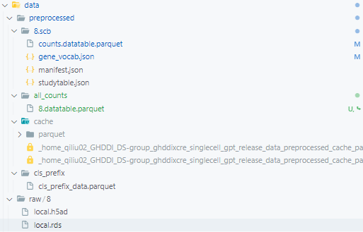
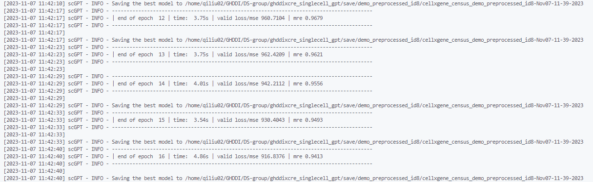
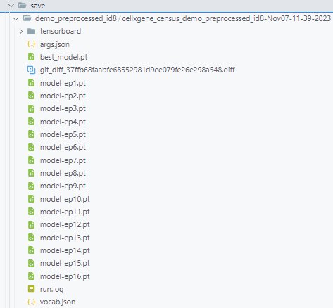
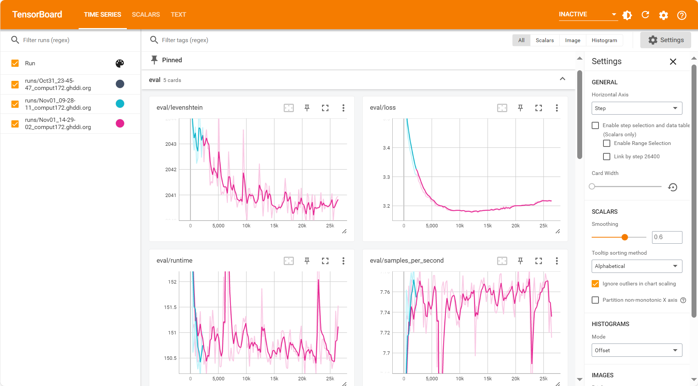
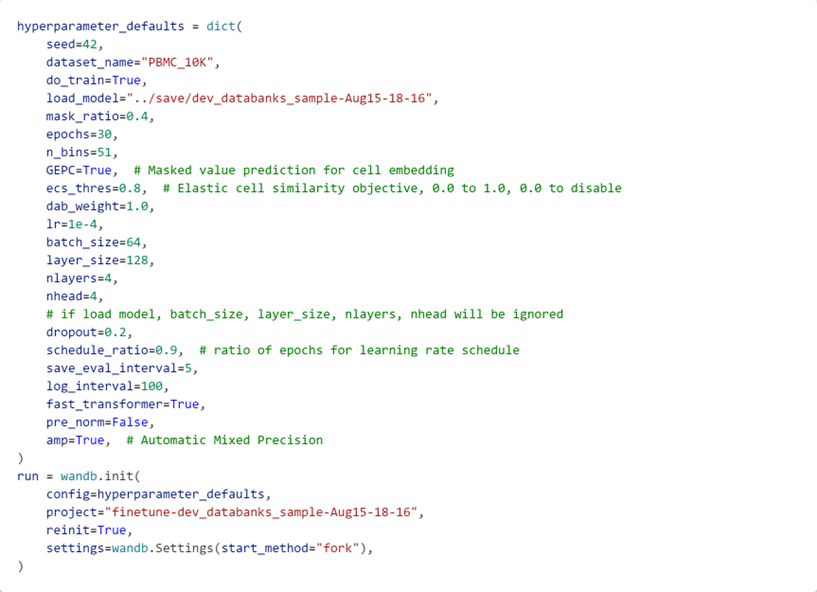

教程
数据预处理
使用我们数据预处理脚本来将 .h5ad 数据处理成scGPT pretraining需要的input embedding数据集.
首先安装git, 终端输入
git --version测试，已安装的话跳过.使用git clone, 将预处理脚本clone到自己的路径.
git clone https://github.com/qiliu-ghddi/singlecell_gpt
预处理, 给定
*.h5ad文件的路径，将其用处理为便于大规模数据处理的.parquet格式, 存放于all_counts路径下.cd data bash build_large_scale_data.sh
运行之前, 我们需要先修改
build_large_scale_data.sh脚本. 这里我们给了demo数据(data/raw/8) 作为demo数据, 可以先进行测试, 完成整个流程, 后续将自己的数据进行类似的处理.查看预训练的数据. 如图所示, 处理后的数据(
all_counts)路径, 可作为后续预训练scGPT的输入.

预训练scGPT
当前的scGPT模型是以scGPT (dev-temp) 为蓝本进行修改的, 和scGPT (main) 公布的模型存在较多区别.
我们预训练scGPT的脚本为 examples/pretrain.sh, 需要运行满足有GPU, 且正确安装运行scGPT的Conda环境的机器上. 这里以装有A100的GHDDI服务器（代号 comput171）为例, 执行下面的命令.
准备工作. 转入到
pretrain.sh所在的路径ssh comput171 nvidia-smi cd examples/ conda activate /home/cliang02/work/software/common/proglang/mambaforge/envs/cre # or conda activate /home/qiliu02/miniconda3/envs/flash-attn
预训练
scGPTbash pretrain.sh
在运行前, 需要根据自己的需要修改
pretrain.sh中的参数.查看运行结果. 预训练的结果包括模型的
checkpoints, 参数文件, 词表以及运行日志等.查看运行日志. 当前预训练过程中使用tensorboard保存日志
cd <save-dir> tensorboard --logdir tensorboard/



精调scGPT
scGPT 提供了一些下游finetune任务). 将我们训练得到的结果作为参数来运行这些下游任务.
在 examples中提供了 finetune_integration作为例子，修改脚本中的 load_model的值，为我们上面训练得到的 checkpoint所在的路径，即可运行. 其会下载 PBMC 10K数据，并用我们得到的模型进行 batch integration的finetuning，最后将结果保存到 wandb的 run中.
